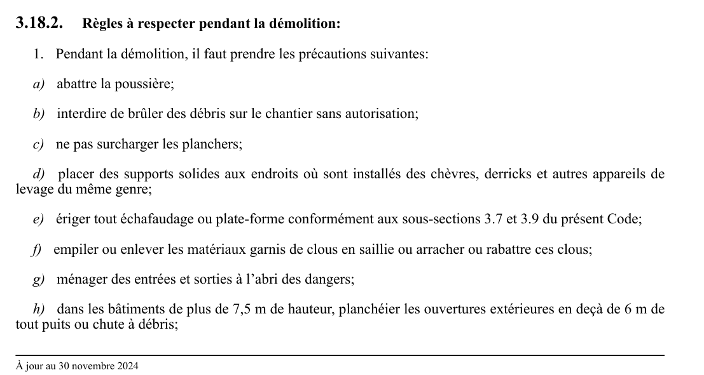

art-3.18.2-CSTC : règles à respecter pendant la démolition
Règles à respecter pendant la démolition: 1. Pendant la démolition, il faut prendre les précautions suivantes: a) abattre la poussière; b) interdire de brûler des débris sur le chantier sans autorisation; c) ne pas surcharger les planchers;
🌐 LegisQuébec · 📄 PDF officiel
Texte officiel
Règles à respecter pendant la démolition:
1. Pendant la démolition, il faut prendre les précautions suivantes:
a) abattre la poussière;
b) interdire de brûler des débris sur le chantier sans autorisation;
c) ne pas surcharger les planchers;
d) placer des supports solides aux endroits où sont installés des chèvres, derricks et autres appareils de levage du même genre;
e) ériger tout échafaudage ou plate-forme conformément aux sous-sections 3.7 et 3.9 du présent Code;
f) empiler ou enlever les matériaux garnis de clous en saillie ou arracher ou rabattre ces clous;
g) ménager des entrées et sorties à l’abri des dangers;
h) dans les bâtiments de plus de 7,5 m de hauteur, planchéier les ouvertures extérieures en deçà de 6 m de tout puits ou chute à débris;
i) planchéier les ouvertures de plancher au-dessous du niveau de démolition et non utilisées pour fins d’enlèvement de débris;
j) conserver les escaliers et les rampes le plus longtemps possible; et
k) appliquer la sous-section 3.1 même lorsque les travaux de démolition sont suspendus.
2. Les travaux de démolition doivent être exécutés en respectant les règles suivantes:
a) la démolition doit s’effectuer systématiquement depuis le toit jusqu’au sol, à moins qu’un autre procédé de démolition n’ait été approuvé par un ingénieur;
b) il faut terminer la démolition et le déblaiement d’un étage avant que ses supports ne cèdent ou soient enlevés;
c) l’ossature d’acier peut rester en place pendant la démolition de la maçonnerie. Cependant elle doit être débarrassée de tout matériau à mesure que la démolition de la maçonnerie progresse;
d) aucune poutre, colonne ou autre élément de charpente ne peut être coupé ou détaché des autres sans avoir été libéré auparavant de tout ce qu’il supporte;
e) des étais solides doivent être installés pendant la démolition des planchers en béton ou en maçonnerie. On doit aussi installer des passerelles ou des madriers pour les travailleurs et leur interdire l’accès des endroits situés en dessous de l’aire de ces travaux;
f) la démolition de la maçonnerie doit s’effectuer par couche à peu près de niveau et non par masses afin de ne pas diminuer la solidité de la charpente et des supports;
g) les supports de corniches et des autres projections doivent rester en place jusqu’à l’enlèvement de ces dernières;
h) il est interdit de travailler au sommet d’un mur, d’un pilier ou d’une cheminée à moins qu’il existe un échafaudage tout autour et à une distance n’excédant pas 3 m du niveau où s’effectue le travail;
i) il est interdit de laisser sans avoir pris des mesures de protection un mur, une cheminée ou tout autre élément de charpente pouvant s’écrouler sous l’effet du vent ou des vibrations;
j) il faut assurer une surveillance constante pendant le cours des travaux afin de prévenir les accidents; et
k) il faut utiliser des lits de sable pour amortir les chutes de matériaux qui présentent des risques pour la santé et la sécurité des travailleurs.
3. Le déblaiement, l’enlèvement et le transport des débris doivent se faire de la façon décrite à l’article 3.2.2.
Texte de l’article 3.18.2 CSTC, extrait de la couche texte du PDF officiel (page 98), sans OCR ni retouche. La capture ci-dessous et le PDF font foi.
{kind=link}

Toucher l'image pour l'agrandir🔗 CSTC.pdf : page 98 · texte à jour au 30 novembre 2024
📚 Source légale : R.R.Q., 1981, c. S-2.1, r. 6, a. 3.18.2; D. 329-94, a. 68; D. 1413-98, a. 24. · LégisQuébec
Voir aussi
- art. 3.18.1
- art. 3.18.3
- ⚖️ Loi habilitante : LSST
- ↑ Section 3 : Chantiers de construction
Pages qui pointent ici (3)
- art-3.18.1-CSTC : règles à respecter avant la démolition Recueil législatif
- art-3.18.3-CSTC : procédé mécanique de démolition Recueil législatif
- CSTC : Section 3 : Chantiers de construction Recueil législatif